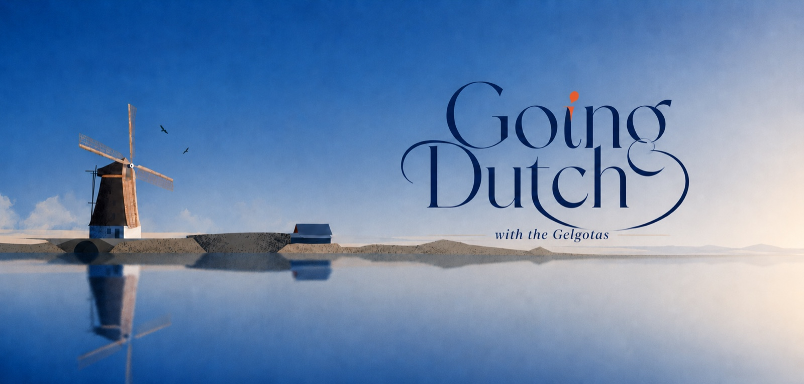
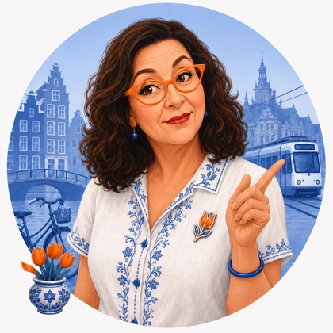
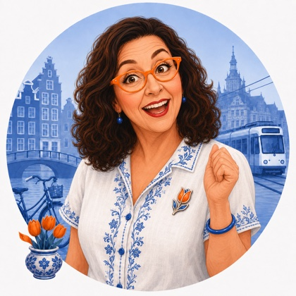
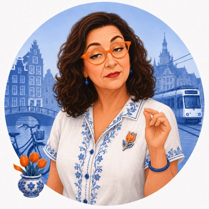
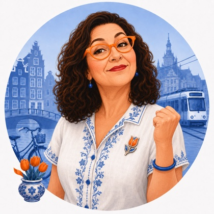

A letter from Tulp de Gid 🌷
Lieve Geltovas, the biggest news of the week belongs to the youngest person in it. A nine year old from Groningen won the right to sing for the whole country on a stage in Malta next month, and I have not gotten her song out of my head since Saturday. Closer to the ground the news was a little more grown up: a candy invented so a baron could get around his own doctor, a painter's quiet view of a town you already half know, a report about all the new homes this country cannot actually switch on yet, and a beach eleven days from throwing itself a very old dinner party. Pour something warm, my dears, and come sit.

The big story
The youngest voice in the country just won the biggest microphone
On Saturday night, inside the arena pictured above, a nine year old named Maria from Groningen won the Junior Songfestival, the Dutch final that decides who gets to sing for the whole country. Her song is called "Stronger Together," and the scoring could not have been closer: she took the maximum twelve points from the professional jury, ten more from a jury of children her own age, and nine from viewers watching at home, for thirty one points total, just three ahead of the runner up. Two other acts finished tied a single point further back. This was decided by a handful of votes among nine year olds and their parents on a Saturday night, which is exactly the kind of democracy I approve of.
"Stronger Together" was written for her by Mell Jonk and Ton Dijkman, and its message, plainly, is about solidarity, empathy, and looking out for one another. I will let you draw your own line from that to a family currently spread across two continents and working, patiently, toward being in one room together. Maria travels next to Ta' Qali in Malta, where she competes in the Junior Eurovision Song Contest on Saturday the twenty fourth of October, and I expect this letter will mention her again.

A few quick things, told quickly.jpg?width=400)
The pump finally broke a record nobody wanted
Petrol prices hit the highest level ever recorded in the Netherlands this month, climbing to 2.726 euros a liter, and the rise has kept coming since, largely because a drone attack knocked out a major oil pipeline in Saudi Arabia. One energy expert would not rule out 3 euros a liter on the motorways before this settles down. Something to budget for quietly if a car is anywhere in the plan once you are all here.

Higher tax, more visitors anyway
Back in January the tax on a hotel night nearly jumped from nine to twenty one percent, and plenty of people, myself included, wondered if that would finally slow the tourist crowds. It has not. Dutch hotels hosted about 3.36 million guests in July alone, foreign visitors up nearly five percent on last year, Belgians up more than twelve percent. A useful thing to know: whenever the family starts sending you all to visit, you will be joining a very well established queue.

Half the new homes cannot be switched on
Remember those thirty thousand new homes the housing minister greenlit a couple of letters back. Here is the catch nobody put on the press release: applications for power connections have now been filed for around six hundred thousand homes over the next three years, and the grid operator says there is simply no room for nearly half of them. A finished house that cannot be plugged in is not a home yet, so keep this one in your pocket when the search eventually turns serious.

Dish of the week
A candy invented to get around a doctor's orders
This week's dish is really a sweet, and it belongs to your own future city. In the eighteenth century a Hague nobleman named Baron Hendrik Hop left a cup of coffee with sugar and cream sitting on his stove overnight, and it hardened into a caramel. He liked it enough that when his doctor later banned him from coffee outright, he asked his downstairs neighbor, a confectioner named Theodorus van Haaren, to work the accident into something he could still eat with a clear conscience.
Van Haaren obliged with a recipe of coffee, caramel, cream, and butter, and the little coffee flavored caramels became known first as "Baron Hop's lumps" before being properly renamed Haagsche Hopjes in 1880. You will still find tins of them in every self respecting Hague sweet shop, and they make an honest, if slightly cheeky, souvenir: a whole candy that exists because one man refused to give up his coffee.

The painting a dying novelist could not stop thinking about
Vermeer painted his own hometown from across the water, the spires and rooftops of Delft caught under a sky doing most of the emotional work, sunlight landing on one wall here, cloud shadow pressing down there. It hangs today in the Mauritshuis, a short walk from where Alec and Irena already live, and it has spent three and a half centuries quietly being one of the most loved paintings in the world.
Here is the strange part. In Marcel Proust's great novel, a writer named Bergotte drags himself out of a sickbed for one last look at this very painting, becomes fixated on a small patch of yellow wall he cannot quite recall, and collapses and dies in front of it. Proust himself saw the real painting in Paris in 1921, on what turned out to be nearly his own last outing. A four hundred year old view of a Dutch street corner, and it has been quietly undoing people ever since.
🌷 Tulp's Dutch Calendar Radar
Eleven days to a five hundred year old dinner party
I told you the legend a few letters back, the hutspot found still warm in an abandoned Spanish kettle the morning Leiden's siege finally broke. This time, since we are close enough to actually plan around it, here is what the two days look like on paper. Friday the second of October brings a market and a funfair through the streets, then a communal hutspot dinner in the early evening. Saturday the third starts absurdly early, a reveille at seven, free herring and white bread handed out from half past, choral singing in the squares, a parade of floats through the afternoon, and fireworks over the water once it is properly dark.
We will get into the dish and the painting that go with it properly once the date itself arrives.
A bit of history first, then something happening on your own beach this very weekend.
.jpg?width=600)
.png?width=600)
The village that turned into a beach, and a sky full of kites to prove it
Scheveningen was a fishing village first. It only became a beach in the way you know it in 1818, when a local named Jacob Pronk built a row of wooden bathing rooms up on the dune closest to the water, so the first genteel visitors from The Hague and beyond could change and wade in with some dignity intact. Word got around Europe fast, and within a couple of generations your future neighborhood had turned from a place fishermen worked into a place everyone else came to relax, which is more or less still the deal today.
This coming Saturday and Sunday, the twenty sixth and twenty seventh of September, that same stretch of sand hosts the Vliegerfestival, the International Kite Festival Scheveningen, for the forty seventh year running. Over a hundred kite flyers from around the world fill the sky just north of the Pier, including a "Megabite" kite reported to be one of the largest in Europe, and it costs nothing to stand underneath it. Amellia is a little young to fly one herself just yet, but she is exactly the right age to stand on that beach with her neck craned back, which honestly might be the better job anyway. More on the kite festival →
"Zullen we gaan vliegeren dit weekend?" (Shall we go fly a kite this weekend?)
"Het is perfect weer om te vliegeren." (It is perfect weather for kite flying.)
And a glance, before I let you go, at what this little family of ours is up to.
🌷 Tulp's question for the table
If the whole family ever stood on that beach together flying one enormous kite, who is doing the running, who is holding the string steady, and who is standing well back giving everyone unwanted advice?
That is the letter, my dears. A nine year old off to Malta on a message about being stronger together, a country that cannot yet plug in half the homes it is building, a baron's candy, a painting that undid a dying novelist, and a beach about to fill with the biggest kites in Europe.
Enjoy the call this Thursday, and give a thought to Maria on the twenty fourth of October. She will need it.
Tot donderdag, which just means until Thursday, and which I already look forward to. Liefs, Tulp.

Van Gogh painted this on your own beach in 1882, on a day the wind was strong enough to blow real grains of sand straight into the wet paint, which you can still see there today if you look closely enough. A good reminder that a proper Scheveningen wind was ruining plans and making art long before any kite festival got involved. We are keeping a calmer version of it warm for you.